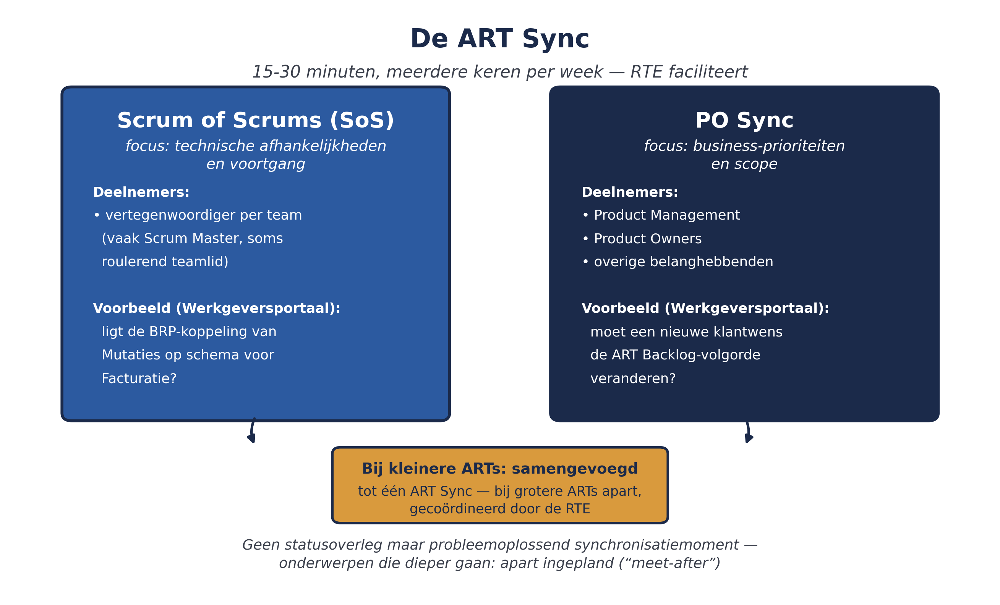
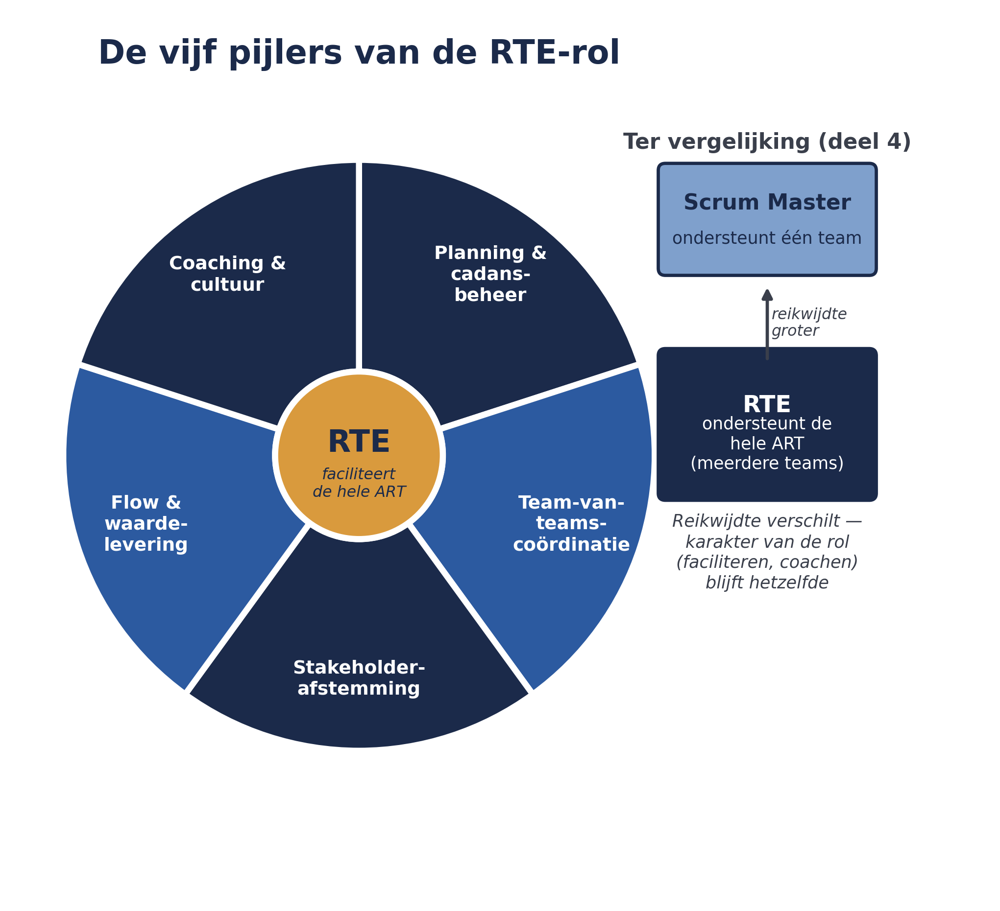

Deel 4 introduceerde de RTE als een van de vier ART-niveau rollen. Dit deel — het eerste van twee die zich op de RTE toespitsen — gaat dieper: wat doet een RTE dag in dag uit, tussen twee PI Plannings in? En hoe blijft die rol faciliterend in plaats van sturend, ook wanneer de druk oploopt, zoals bij Meridiaan na de WGP 2.0-geschiedenis maar al te bekend is?
5secties
±1,5udagdeel + huiswerk
11controlevragen
5pijlers RTE-rol
Positionering. Deze cursus is een voorbereiding op de certificeringen SAFe Agilist (SA) en SAFe Practitioner (SP) van Scaled Agile, en uitdrukkelijk geen vervanging van het officiële SAFe-curriculum — dat wordt uitsluitend aangeboden via geautoriseerde Scaled Agile Partners. Voor terminologie en structuur volgen wij SAFe 6.0, de actuele versie van het Core-raamwerk.
Niveau 2: 11 Van ART naar Solution Train → 12 RTE-zwaartepunt I (hier) → 13 RTE-zwaartepunt II → 14 Agile Product Management → 15 Continuous Delivery Pipeline → 16 Architectural runway → 17 LPM I: strategie & budgets → 18 LPM II: portfolio kanban → 19 Meten: flow metrics & OKR's → 20 Governance & compliance → 21 AI-Native II → 22 Examentraining + capstone
01
De RTE-rol in vijf pijlers
⏱ 16 min
De dagelijkse praktijk van een RTE laat zich ordenen in vijf samenhangende pijlers:
Planning & cadans-beheer — de ART-kalender opstellen, readiness-checklists bijhouden (deel 7), en het PI Planning-draaiboek beheren.
Team-van-teams-coördinatie — stromen synchroniseren, afhankelijkheden tussen teams blootleggen, en visueel management (het Program Board uit deel 8) actueel houden.
Stakeholderafstemming — nauw samenwerken met Product Management, System Architect/Engineering en Business Owners om uitkomsten op elkaar af te stemmen.
Flow en waardelevering — een beperkt aantal betekenisvolle metrics volgen (voorspelbaarheid: geplande versus gerealiseerde PI-doelen; doorlooptijd; onderhanden werk) om knelpunten vroeg te signaleren.
Coaching en cultuur — Scrum Masters en Product Owners coachen, en de gewoonte van Inspect & Adapt (deel 8) levend houden.
Dit onderscheidt de RTE nadrukkelijk van een Scrum Master: een Scrum Master ondersteunt één team, de RTE ondersteunt de hele ART. De reikwijdte is anders, het karakter van de rol (faciliteren, coachen, dienend leiderschap) blijft hetzelfde.
Controlevragen
Uit Werkboek deel 12, Opdracht 12.1 — de vijf pijlers herkennen
1De RTE houdt een eenvoudig dashboard bij van geplande versus gerealiseerde PI-doelen over de laatste drie PI's. Welke pijler is hier het meest van toepassing?Toon antwoord
Flow en waardelevering — het volgen van voorspelbaarheid (geplande versus gerealiseerde PI-doelen) is precies het type metric dat deze pijler beschrijft.
2De RTE plant, samen met Product Management, de eerstvolgende readiness-check voor PI Planning. Welke pijler is hier het meest van toepassing?Toon antwoord
Planning & cadans-beheer — readiness-checklists bijhouden valt direct onder deze pijler.
3De RTE merkt dat een Scrum Master moeite heeft met het bespreekbaar maken van een teamconflict, en plant een informeel gesprek. Welke pijler is hier het meest van toepassing?Toon antwoord
Coaching en cultuur — het coachen van een Scrum Master is de kern van deze pijler.
4De RTE brengt tijdens de ART Sync een afhankelijkheid tussen twee teams in kaart op het Program Board. Welke pijler is hier het meest van toepassing?Toon antwoord
Team-van-teams-coördinatie — afhankelijkheden tussen teams blootleggen en visueel management actueel houden is exact deze pijler.
02
De ART Sync
⏱ 15 min
Tussen de PI Plannings door heeft een ART een terugkerend coördinatiemoment nodig — anders ontstaat precies het probleem dat deel 1 beschreef: teams die op zichzelf goed werken, maar niet meer samen optellen. Dit coördinatiemoment heet de ART Sync, en combineert twee onderdelen:
Onderdeel
Richt zich op
Deelnemers
Scrum of Scrums (SoS)
Technische afhankelijkheden en voortgang tussen teams
Vertegenwoordiger per team (vaak Scrum Master), gefaciliteerd door de RTE
PO Sync
Business-prioriteiten, voortgang en scope-aanpassingen
Bij kleinere ARTs worden deze twee vaak samengevoegd tot één ART Sync; bij grotere ARTs lopen ze apart, gecoördineerd door de RTE. Een goed gefaciliteerde ART Sync is kort en strak getimed (doorgaans vijftien tot dertig minuten, meerdere keren per week), en is geen statusoverleg maar een probleemoplossend synchronisatiemoment: onderwerpen die meer tijd vragen, worden apart ingepland ("meet-after") in plaats van de hele groep op te houden.

Figuur 12-2 — de ART Sync: Scrum of Scrums en PO Sync naast elkaar, met deelnemers en frequentie
Voor de ART "Werkgeversportaal" bij Meridiaan zou een ART Sync er bijvoorbeeld als volgt uitzien: de Scrum of Scrums-component bespreekt of de BRP-koppeling van team Mutaties op schema ligt voor team Facturatie (de afhankelijkheid die in deel 8 tijdens PI Planning al zichtbaar werd), terwijl de PO Sync bespreekt of de prioriteit van een nieuwe klantwens de bestaande volgorde van de ART Backlog zou moeten veranderen.
Controlevraag
Uit Werkboek deel 12, Opdracht 12.2 — Scrum of Scrums versus PO Sync
1Leg het verschil uit tussen het Scrum of Scrums-onderdeel en het PO Sync-onderdeel van de ART Sync. Geef voor elk een voorbeeld van een onderwerp dat daar besproken zou worden bij de ART "Werkgeversportaal".Toon antwoord
Scrum of Scrums richt zich op technische afhankelijkheden en voortgang tussen teams (bijvoorbeeld: staat de BRP-koppeling op schema voor team Facturatie?); PO Sync richt zich op business-prioriteiten en scope (bijvoorbeeld: moet een nieuwe klantwens de huidige ART Backlog-volgorde veranderen?).
03
Servant leadership in de praktijk
⏱ 15 min
"Servant leadership" is meer dan een intentie — het vertaalt zich in concreet gedrag tijdens een ART Sync of ander overleg:
Vragen stellen in plaats van antwoorden geven. Een RTE die zelf de oplossing voor een afhankelijkheidsprobleem aandraagt, ontneemt de teams de kans dat zelf te doen — en ondermijnt op termijn hun probleemoplossend vermogen.
Onzichtbare belemmeringen zichtbaar maken. Een RTE die merkt dat een team stelselmatig een bepaald type afhankelijkheid niet meldt, onderzoekt waaróm dat niet gebeurt (onzekerheid, angst, onduidelijke verantwoordelijkheid) in plaats van alleen te vragen om het voortaan wel te melden.
Ruimte creëren voor de stem van iedereen, niet alleen de meest luidruchtige teams — relevant bij een ART Sync waar sommige teams (zoals een kleiner platformteam) makkelijk ondergesneeuwd raken.
Escaleren wanneer nodig, zonder de eigenaarschap over te nemen. Als een probleem het mandaat van de teams te boven gaat, brengt de RTE het naar het juiste niveau (bijvoorbeeld de Business Owners), maar draagt de oplossing niet zelf op.
Controlevragen
Uit Werkboek deel 12, Opdracht 12.3 — servant leadership toepassen
1Een team bij Meridiaan meldt tijdens de ART Sync een terugkerend probleem: de BRP-koppeling blijft vertragen. De RTE heeft zelf al een technische oplossing in gedachten. Beschrijf hoe een RTE die de command-and-control-reflex vermijdt, hiermee zou omgaan.Toon antwoord
De RTE vraagt het team eerst zelf naar mogelijke oorzaken en oplossingsrichtingen, en faciliteert een gesprek tussen de betrokken teams in plaats van zelf de oplossing te presenteren.
2Beschrijf, ter vergelijking, hoe een RTE die in de reflex vervalt, hetzelfde probleem zou aanpakken.Toon antwoord
De RTE deelt direct de eigen technische oplossing en instrueert het team die uit te voeren.
3Welk risico op langere termijn loopt de ART bij die tweede aanpak, ook als de oplossing technisch goed is?Toon antwoord
Het team leert dat probleemoplossing "van boven" komt, wat op termijn de bereidheid vermindert om zelf problemen te melden en op te lossen — precies de dynamiek die schaalproblemen zoals bij WGP 2.0 in stand houdt.
04
De valkuil: van faciliteren naar sturen
⏱ 14 min
De meest voorkomende valkuil bij RTE's — met name bij mensen met een projectmanagementachtergrond, relevant bij Meridiaan gezien de WGP 2.0-geschiedenis — is de command-and-control-reflex: onder tijdsdruk terugvallen op zelf beslissingen nemen en taken opleggen, in plaats van te coachen en te faciliteren. Dit tast op termijn het vertrouwen in de RTE-rol aan: teams leren dat "meepraten" toch geen verschil maakt, en gaan zich terugtrekken op alleen hun eigen teamwerk — precies het probleem waarmee deze cursus in deel 1 begon.
De command-and-control-reflex
Het herstel van deze valkuil is niet ingewikkeld om te benoemen, maar wel om vol te houden onder druk: terug naar de Lean-Agile Leadership-dimensies uit deel 3 — Leading by Example, met name gedecentraliseerde besluitvorming en emotionele intelligentie (herkennen wanneer de eigen impuls is om te sturen, en daar bewust tegenin gaan).
Controlevraag
Uit Werkboek deel 12, Opdracht 12.4 — meet-after toepassen
1Tijdens een ART Sync ontstaat een discussie die veel dieper gaat dan het tijdsbestek toelaat. Beschrijf hoe een RTE dit goed afhandelt met het "meet-after"-principe, zonder de rest van de groep op te houden en zonder het onderwerp te laten verzanden.Toon antwoord
Een goede RTE erkent expliciet dat het onderwerp belangrijk is, stelt voor het apart in te plannen met de betrokkenen ("meet-after"), en brengt de ART Sync terug naar de resterende agendapunten — zonder het onderwerp te bagatelliseren of het gevoel te geven dat het wordt genegeerd.
05
Terug naar Meridiaan
⏱ 12 min
Bij de opschaling naar de Solution Train Mutatieplatform (deel 11) krijgt elke onderliggende ART zijn eigen RTE, die op zijn beurt samenwerkt met de Solution Train Engineer (STE) van deel 11. Voor Meridiaan betekent dit dat de RTE-rol niet één keer wordt ingevuld, maar meerdere keren — met het risico dat elke RTE zijn eigen stijl ontwikkelt. Een goede STE besteedt daarom aandacht aan het gezamenlijk kalibreren van wat servant leadership in de praktijk betekent tussen de RTE's onderling, zodat teams niet merken dat de ene ART strenger wordt "gemanaged" dan de andere.

Figuur 12-1 — de vijf pijlers van de RTE-rol als wiel, met de Scrum Master-rol uit deel 4 ter vergelijking
Kernbegrippen uit dit deel
De vijf pijlers van de RTE-rol — planning & cadans, team-van-teams-coördinatie, stakeholderafstemming, flow & waardelevering, coaching & cultuur.
ART Sync — het terugkerende coördinatiemoment, bestaande uit Scrum of Scrums (technisch) en PO Sync (business), gefaciliteerd door de RTE.
Servant leadership — concreet gedrag: vragen stellen, belemmeringen zichtbaar maken, ruimte geven, escaleren zonder over te nemen.
Command-and-control-reflex — de valkuil van sturen onder druk, in plaats van faciliteren.
Controlevragen
Uit Werkboek deel 12, Zelftoets, vraag 2 en 5
1Wat is het verschil tussen een Scrum Master en een RTE, qua reikwijdte?Toon antwoord
Een Scrum Master ondersteunt één team; de RTE ondersteunt de hele ART.
2Wat is de command-and-control-reflex, en wat is het risico ervan op langere termijn?Toon antwoord
Onder tijdsdruk terugvallen op zelf beslissen en opleggen in plaats van faciliteren; het risico is verlies van vertrouwen en afnemende bereidheid van teams om zelf problemen te melden en op te lossen.
Verder naar deel 13
Deel 13 is het tweede RTE-zwaartepunt: hoe stemmen meerdere ARTs binnen de Solution Train Mutatieplatform hun PI Planning op elkaar af, via Pre-PI Planning en Post-PI Planning?